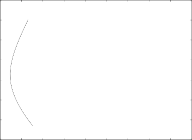
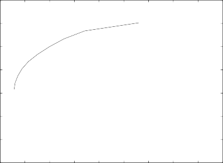

One could get even more creative and do the cubed root, and so on and so forth.
Instead of equal weighting or value weighting, portfolio man- agers also can use price weighting. In the price-weighting scheme, the manager buys the same number of shares in each stock so that the weights are proportional to the prices of stocks. If the share price of a stock is high, this stock will have relatively more weight in the portfolio. This is the way the Dow Jones Industrial Average and the Nikkei 225 Index are calculated.
We will discuss a few more ad hoc weighting schemes when we discuss the weighting of benchmarked portfolios.
9.3 STANDARD MEAN-VARIANCE OPTIMIZATION
Given the mean and the variance of future stock returns, we can use the quadratic programming technique to find the portfolio that has the minimum risk. That is, we can find the portfolio that has the low- est ex-ante risk among portfolios with identical expected returns. This is known as mean-variance optimization, or simply MVO.
The underlying idea of this method is the comparison of all the portfolios that potentially could be built given a list of stocks. We theoretically compute each portfolio’s ex-ante risk from the variances and covariances of the returns of all stocks and each port- folio’s expected return from the mean returns of individual stocks. Then we theoretically compare the ex-ante risks and the expected returns of all the portfolios and choose the one with the lowest risk for a given level of expected return. (Or, conversely, we can choose

3 Many portfolios and indices are also float-weighted, which has the same sort of characteristics as value weighting, except stocks are weighted by their floating shares, not their shares outstanding.
the portfolio with the highest expected return for a given level of risk.4)
Of course, actually calculating the expected return and the risk of every potential portfolio would take forever because there are infinite potential portfolios. Thus we use quadratic programming to find the minimum-risk portfolio without having to explicitly calcu- late every portfolio’s risk and return.
One common objection of MVO is that the selected portfolio often assigns very large weights to certain outlier stocks, including stocks with very low variances or very high means. This in itself should not be a concern. If the stock indeed has a low variance for a given return, then it is smart to overweight it in the portfolio. However, in portfolio construction, we must estimate the means and variances of stocks, so we cannot be sure of their true values. Some outliers could be mismeasurements and throw off our results (“Garbage in, garbage out,” as the saying goes). The portfolio man- ager therefore must do his or her best to account for estimation error.5 If this is not practical, the manager may include additional portfolio constraints in the quadratic optimization problem that put limitations on the maximum and minimum stock weights. The most common additional portfolio constraints are short-sale con- straints, which do not allow for a negative weight on any stock; diversification constraints, which restrict any stock from having more than a certain threshold weighting; and sector constraints, which do not allow the composite weight of any group of stocks in a certain sector of the economy to be beyond a certain level.
The portfolio manager must be careful not to impose so many
constraints that some of them begin to contradict each other. As a rather obvious example, not all stocks in a portfolio can weigh less than 5% if the portfolio is limited to 10 stocks; the portfolio will not be fully invested. Typically, portfolio managers impose only the

4 Mathematicians and software programs, however, prefer the formulation in which the objective function is quadratic and the constraint is linear (rather than the other way around). See Appendix 9A for the mathematical details of typical quadratic optimization problems.
5 Chapter 8 discussed methods to measure estimation error. The reader also may be interested in a book that deals with estimation error such as Michaud (1993). This book is particularly critical of MVO. On page 3, it reads, “MV optimizers function as a chaotic investment decision system. Small changes in input assumptions often imply large changes in the optimized portfolio. The procedure overuses statistically estimated information and magnifies the impact of estimation errors. The result is that the optimized portfolio is ‘error maximized.’”
most obvious or needed constraints and let the optimizer do the rest.
9.3.1 No Constraints
Let us first look at how to use MVO without imposing additional constraints. We assume that the portfolio manager already has built a model of expected stock returns and risk either by using one of the models discussed in previous chapters or by using commer- cial software risk models combined with his or her excess-return models.
The first step is to include all the relevant information about individual stock returns in a vector and a matrix . is an N- dimensional column vector of expected returns of individual stocks, where N is the number of stocks in the investment universe.
is an N x N matrix of variances and covariances of individual stock returns. That is,
Er1
(9.3)
ErN
V r1
C r1 ,r2
C r1 ,rN
C r2 ,r1 V r2 C r2 ,rN
(9.4)
C rN ,r1 C rN ,r2 V rN
where E(ri) is the expected return of stock i, V(ri) is the variance of stock i’s return, and C(ri, rj) is the covariance between stock i’s return and stock j’s return.
A portfolio is specified by a weight vector w. w is an N-dimen- sional column vector of stock weights:
w1
w
(9.5)
wN
where wi is the weight of stock i in the portfolio. For w to be a valid weight, the sum of all the elements in w should be one. We may define as an N-dimensional vector of one such that
1
(9.6)
1
i=1
i=1
i=1
The sum of elements in w is N wi or simply w, which should be
one. For the portfolio specified by weights w, the expected return
of the portfolio is N w E (r ) or simply w, whereas the risk of the
i=1 i i
portfolio (i.e., the variance of the portfolio return) is N w 2 V(r ) +
i=1 i i
2N N w w C(r , r ) or, in matrix notation, ww. Thus the port-
i=1 j=i+1 i j i j
folio that has the minimum risk with the expected return of P is the solution to the following minimization problem:
min w w s.t.
w
w = p
and
w = 1
(9.7)
Note that the objective function (ww) is a quadratic function of w (i.e., the weight terms are squared), whereas the constraints (w = P) are linear in w. Mathematicians call this problem a quadratic optimization problem and have developed a way of dealing with this called quadratic programming. In fact, mathematicians would prefer to rewrite the constraints in the following way:
Aw = b (9.8)
where
A 1 1 1
(9.9)
1 2 N
1
b
p
(9.10)
We show in Appendix 9A that this particular form of the quadratic minimization problem with equality constraints has a closed-form solution. The solution is
w = —1A (A—1A)—1 b (9.11)
Figure 9.1 provides a visual example of the results from a mean-variance optimization. In this particular optimization, we focused on the 35 stocks that comprise the consumer staples sector of the Standard & Poor’s (S&P) 500 Index. We created a five- factor economic model of security returns using unemployment, consumer sentiment, the market, size, and the value/growth
F I G U R E 9 . 1

Efficient frontier for consumer staple sector (January 2004). Based on data from January 2000 to December 2003. Dots indicate the expected returns and the standard deviations of individual stocks. Expected return and standard deviation are annualized and in percent.
50
40
30
Expected Return
Expected Return
Expected Return
20
10
0
-10
-20

20 40 60 80 100 120 140 160 180 200
Standard Deviation
factor. We estimated the economic factor model for the period from January 2000 to December 2003, and we produced forecasts for the expected returns and variances of all stocks for January 2004.
After that, we used our mean-variance optimization to create the minimal-risk portfolios for a variety of expected portfolio returns. We first found the stocks with the lowest and highest mean returns. We then began the optimization procedure to minimize risk for a given level of expected return using the expected return of the lowest expected return stock. Storing the optimal portfolio weights that would create this portfolio, we incremented the mean return and performed the optimization again, finding the optimal weights for that given mean return. We continued doing this until we reached the expected return of the security with the highest mean return. At this point we stopped running the optimization and plotted all the points in the diagram and connected them. The
curve that results from these plotted points is typically called the efficient frontier in modern portfolio theory, although, technically, the efficient frontier is only the part of the curve whose gradient is positive (the upper half of the curve). Also, since we forecasted the expected returns and variances, we should call this curve the predictive efficient frontier.
Typically, we decide how many intervals of expected return and variance we would like to plot. Smaller intervals necessitate more computation but also result in a smoother plot of the efficient frontier. The interval is usually chosen by taking the highest expect- ed return max(), subtracting the minimum expected return, min(), and dividing by the number of intervals one desires (that is, [max()—min()] number of intervals = increment). This value becomes the incremental value to the expected portfolio return in the mean-variance optimization problem. Thus one starts with min(), computes the optimal portfolio weights, and then recom- putes the optimization problem using the portfolio mean of min() plus increment. And the process continues until one reaches the maximum expected return.
We also plotted the expected returns and variances of all the
individual stocks in the consumer staples sector. (These are repre- sented by dots.) This plot of the efficient frontier completes the process and maps out our portfolio choices. We should decide on the expected-return–expected-risk profile we wish to have and then pick the weights of the stocks corresponding to that profile on the efficient frontier.
Table 9.1 shows the characteristics and composition of select- ed portfolios along the efficient frontier that we created. We chose to show five portfolios with varying annual expected returns from 10.81% to 40.25%. More than half the stocks in the original universe are included in the portfolios. Stock weights vary from about minus 20% to plus 20%. Since we did not impose the short-sale restriction, a number of stocks have negative weights.
Let’s look at portfolio C on the efficient frontier. We expect that portfolio C will generate an annualized expected return of 24.73%. The annualized standard deviation is expected to be 33.78%. This optimal portfolio contains 24 stocks. Budweiser (BUD) has the highest weighting (17.12%) in this portfolio, and Kimberly-Clark Corp (KMB) has the lowest weighting (—12.60%). A portfolio manager might like to create a portfolio with a 24.73% annual expected return and a standard deviation of 33.78%, but he
T A B L E 9 . 1

Selected Efficient Portfolios from Consumer Staples Sector
Portfolios | A | B | C | D | E |
Expected return | 10.81 | 17.58 | 24.73 | 32.28 | 40.25 |
SD | 29.52 | 30.23 | 33.78 | 39.41 | 46.37 |
Market | 0.0748 | 0.0836 | 0.0924 | 0.1013 | 0.1101 |
Number of stocks | 21 | 23 | 24 | 25 | 25 |
Max. weight | 0.1683 | 0.1689 | 0.1712 | 0.1727 | 0.2212 |
Min. weight | —0.0396 | —0.0828 | —0.1260 | —0.1692 | —0.2125 |
Selected | BUD | BUD | BUD | BUD | BF.B |
constituents | (0.1683) | (0.1698) | (0.1712) | (0.1727) | (0.2212) |
(weight) | CL | CL | BF.B | BF.B | BUD |
(0.1121) | (0.0839) | (0.1208) | (0.1710) | (0.1741) | |
GIS | G | MKC | MKC | MKC | |
(0.0958) | (0.0821) | (0.0906) | (0.1129) | (0.1352) | |
G | K | K | SWY | SWY | |
(0.0872) | (0.0815) | (0.0870) | (—0.1088) | (—0.1487) | |
WWY | KMB | KMB | KMB | KMB | |
(0.0776) | (—0.0828) | (—0.1260) | (—0.1692) | (—0.2125) |
Note: Using stocks in the consumer staple sector and the unemployment, the consumer sentiment, the market, the size, and the value/growth factor. The computation is based on data from January 1996 to December 2003. Expected return and standard deviation (SD) are annualized and in percent. Ticker symbols used and their company name: BUD (Anheuser- Busch Cos., Inc.), BF.B (Brown-Forman-Cl B), CL (Colgate-Palmolive Co.), GIS (General Mills, Inc.), G (Gillette Co.), K (Kellogg Co.), KMB (Kimberly-Clark Co.), MKC (McCormick & Co.), SWY (Safeway, Inc.), and WWY (Wrigley, Jr., Co.). Means and standard deviations are annualized.
or she may not be able to implement the results of this mean-vari- ance optimization. For instance, if he or she is not allowed to short stocks, a 12% short of KMB is out of the question. This illustrates why the manager might wish to perform a mean-variance opti- mization with additional constraints. We discuss some of the most common additional constraints in the next subsections.
9.3.2 Short-Sale and Diversification Constraints
Portfolio managers may face constraints on their investment port- folios for various reasons, such as legal restrictions or prospectus mandates. The main constraint on a long-only portfolio manager is the short-sale restriction that prevents shorting securities. Mathematically, we can represent the short-sale restriction as the condition that
w 2: 0 (9.12)
which indicates that each stock has at least a weight of zero.
This restriction simply can be added to the minimization prob- lem as an additional constraint. This type of constraint, however, is an inequality constraint. We show in Appendix 9A that when dealing with inequality constraints, the quadratic optimization problem does not have a simple analytical solution and instead requires numerical methods to solve for the optimal portfolio weighting.
Techniques designed to solve this type of quadratic minimiza- tion with inequality constraints are known as quadratic programming. Most portfolio managers simply need to be able to formulate the constraints, enter them into the commercial software or quadratic optimizer, and let the software/optimizer do the rest. For readers who are more interested in the mathematics of quadratic program- ming, we discuss it in Appendix 9A.
Using the same data as before and a quadratic optimization programming tool, we recalculated the set of efficient portfolios with the additional short-sale constraints using the same approach. Figure 9.2 plots the efficient frontier. As before, we focused on the same consumer staples sector of the S&P 500 and used the same time period for estimation, January 2000 to December 2003, and the same model for security returns. We then produced forecasts for the expected returns and variances of all stocks for January 2004.
Compared with Figure 9.1, the efficient frontier has shifted to the right owing to the additional short-sale constraint. This makes sense. By adding an additional constraint to the optimization, the lowest-risk portfolio we can create will have a higher risk than the lowest-risk portfolio we were able to create without the short-sale constraint.
Table 9.2 shows the characteristics and composition of select- ed portfolios along the efficient frontier. We chose to show four portfolios with target monthly mean returns identical to the port- folios listed in Table 9.1. We did not include the portfolio with the expected return of 10.81%. The variance of the portfolio with the expected return of 10.81% is higher than the variance of portfolio B, so, in the strictest sense, it is no longer an efficient portfolio. And there are other differences. The minimum-risk portfolio includes fewer stocks to achieve the same expected return. Its maximum stock weights are also higher than in the optimization without con- straints. Portfolio E is an extreme case in which the entire portfolio consists of just one stock, SVU.
F I G U R E 9 . 2

Efficient frontier for consumer staple sector with short-sale constraints (January 2004). Based on data from January 2000 to December 2003. Dots indicate the expected returns and the standard deviations of individual stocks. Expected return and standard deviation (SD) are annualized and in percent.
50
40
Expected Return
Expected Return
Expected Return
30
20
10
0
-10
-20

20 40 60 80 100 120 140 160 180 200
Standard Deviation
Let’s look again at portfolio C on the efficient frontier. We expect that portfolio C will generate an annualized expected return of 24.73%. This is comparable to portfolio C in the uncon- strained case reported in Table 9.1. The standard deviation of the annual return is expected to be 45.40%. Even though this optimal portfolio’s expected return is similar to that of portfolio C in Table 9.1, the risk is clearly higher. This optimal portfolio contains 15 stocks compared with the 23 in the unconstrained portfolio, with the highest-weighted stock representing 19.16% of the portfolio. The constraint has removed the extremely nega- tive weighting of KMB, as it should. At first glance, one might be unsatisfied with the results of the mean-variance optimization because this portfolio is not as optimal as the portfolio in the unconstrained case. However, the new portfolio will satisfy the
T A B L E 9 . 2

Selected Efficient Portfolios from Consumer Staples Sector with Short-Sale Constraints
Portfolios | B | C | D | E |
Expected return | 17.58 | 24.73 | 32.28 | 40.25 |
SD | 34.45 | 45.40 | 67.70 | 132.13 |
Market | 0.1585 | 0.3188 | 0.5590 | 0.6402 |
Number of stocks | 18 | 15 | 11 | 1 |
Max. weight | 0.1601 | 0.1916 | 0.3108 | 1.0 |
Selected | BUD | BF.B | BF.B | SVU |
constituents | (0.1601) | (0.1916) | (0.1916) | (1.0) |
(weight) | CLX | CLX | SVU | |
(0.0964) | (0.1113) | (0.2493) | ||
K | SVU | MO | ||
(0.0921) | (0.1092) | (0.1453) | ||
BF.B | HSY | RJR | ||
(0.0899) | (0.0779) | (0.0870) | ||
PG | K | CLX | ||
(0.0839) | (0.0723) | (0.0829) |
Note: Using stocks in the consumer staple sector and the unemployment, the consumer sentiment, the market, the size, and the value/growth factor. The computation is based on data from January 1996 to December 2003. Expected return and standard deviation (SD) are annualized and in percent. Ticker symbols used and their company name: BUD (Anheuser- Busch Cos., Inc.), BF.B (Brown-Forman-Cl B), CLX (Clorox Co.), HSY (Hershey Foods Corp.), K (Kellogg Co.), MO (Altria Group, Inc.), PG (Procter & Gamble Co.), SVU (Supervalu, Inc.), and RJR (RJ Reynolds Tobacco Hdlgs.). Means and stan- dard deviations are annualized.
needs of a long-only portfolio manager, demonstrating why it is useful to perform a mean-variance optimization with short-sale constraints.
In addition to short-sale constraints, portfolio managers also may wish to have diversification constraints. These are constraints that a mutual fund obeys in compliance with the diversification requirements of the Investment Company Act of 1940.6 Of course,

6 The Investment Company Act of 1940 Rule 12-d3 specifies certain investment constraints for diversified and nondiversified mutual funds. One rule prohibits mutual funds from owning more than 5% of other investment companies, which are firms that derive more than 15% of their revenue from securities-related activity. This would be a constraint for any portfolio manager holding any type of banking stock.
Another rule states that a fund that advertises itself as a diversified fund may not hold more than 5% of its assets in any particular company or hold more than 10% of the voting stock of any company for 75% of the portfolio’s assets. Due to this rule, we like to call the restriction on the maximum weight of a stock in the portfolio the diversification rule.
a hedge fund, despite not being regulated by the Securities and Exchange Commission (SEC), also may wish to follow maximum- weight constraints because too much exposure to very few stocks also increases the portfolio’s diversifiable risk. Restrictions of these kind generally can be expressed as
w 三 w 三 —w (9.13)
where w and —w are N-dimensional vectors of maximum and mini- mum allowed weights. This constraint can be added easily to the optimization problem and satisfies both the short-sale constraint and the diversification constraint simultaneously.
9.3.3 Sector or Industry Constraints
Many portfolio managers—especially those who manage against a benchmark—wish to constrain the sector weightings of the portfolio. Here is a simple modification to the framework to constrain sector weightings:
wj 三 wj 三 w–j (9.14)
where wj represents the weight of sector j in the portfolio.7
9.3.4 Trading-Volume Constraint
One of the typical constraints that portfolio managers add to the optimization is the trading-volume constraint. This is particularly relevant when the value of the portfolio is large and the portfolio manager’s transactions have a large price impact. To avoid creating negative price impact, the portfolio manager may restrict the hold- ing of each stock to keep it below some threshhold amount, typi- cally a fraction of the average trading volume of each stock.
Suppose that the value of the portfolio is $500 million and that the portfolio manager wants to keep the holding of one stock below 10% of the average trading volume of the stock (ADV). If wi is the portfolio weight of stock i and xi is the average trading vol- ume of stock i measured in millions of dollars, then the constraint is 500wi 三 0.1xi or wi 三 (0.1/500)xi.
In general, the trading-volume constraint can be expressed as
w 三 cx (9.15)

7 Most software packages, such as MATLAB, have a simple way to add upper- and lower- bound constraints to their quadratic optimizer.
where x is a vector of average daily trading volume in dollar terms, and c is a constant indicating the threshold.
9.3.5 Risk-Adjusted Return
So far we have formulated the mean-variance optimization prob- lem as a risk minimization. Some portfolio managers may prefer an alternative formulation with expected return maximization. The expected return maximization can be written as
max w
w
s.t.
w w = 2
(9.16)
P
P
P
and other constraints. The expected return maximization may be more useful if the portfolio manager has a specific target risk level
P,
P,
P,
2 whereas the risk minimization may be more useful if the port- folio manager has a target expected return.8
P
P
P
When the portfolio manager has neither a target risk nor a target expected return, the mean-variance optimization can be expressed in terms of risk-adjusted expected return. We can adjust the expected return for the risk by subtracting some multiple of the risk, that is, P — A 2. The multiplier A is called the risk-aversion parameter because a high value of A indicates that the portfolio
manager considers the risk very costly. If the value of A is 2, it means that the portfolio manager equates a 1% increase in the vari- ance with a 2% decrease in the expected return. Once the value of the risk-aversion parameter is decided, the mean-variance problem becomes
max w – Aw w
w
(9.17)
This formulation turns out to be quite useful in certain applications.9

8 In fact, there is one more practical reason why this formulation may be preferred. In the minimization of the risk with a target expected return, there is a danger that the target expected return may not be feasible given the parameters. Thus the portfolio manager may end up getting a portfolio he or she did not wish to obtain, or even worse, the optimization may fail altogether.
9 This formulation has a theoretical appeal as well. The objective function can be interpreted as an investor’s utility function, and the optimization can be interpreted as an investor’s utility maximization. This is how theory says investors make portfolio decisions. On the other hand, maximizing the information ratio or some ratio of expected retum to risk does not have such theoretical appeal.